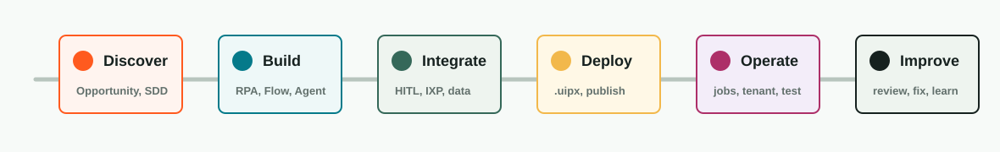

Authoring
Catalogo analizzato dal repository UiPath/skills
Una mappa pratica per usare Codex lungo tutto il ciclo di vita UiPath
Scopri opportunità, parti da PDD e SDD, scegli il tipo di automazione, costruisci artefatti locali, valida con il CLI, pubblica soluzioni, monitora esecuzioni e risolvi incidenti.
Versione skill analizzate
1.199.0
Target CLI
^1.199.0 · commit 087b27f85 · 21 luglio 2026
- Skill
- 24
- Commit
- 087b27f85
- CLI locale
- uip 1.197.1
Versione letta da version-manifest.json. Snapshot repository: 1.199.0. Schema manifest: 2. Hash completo: 087b27f85efe5f2c4422ae4a0df3df32ee6841d8.
Installazione PowerShell
Esegui questo comando in PowerShell per installare il CLI e le skill UiPath incluse.
irm https://download.uipath.com/uipath-cli/install.ps1 | iex
Materiale di riferimento
Tre fonti, tre ruoli distinti
Il repository definisce il catalogo corrente; la documentazione ufficiale spiega il modello mentale e offre una vista lifecycle con prompt di esempio.
Fonte corrente
UiPath skills repository
Fonte di verità per elenco, istruzioni, risorse e modifiche più recenti delle skill.
ConcettiSkills overview
Definisce cosa contiene una skill, come viene selezionata dal coding agent e come indirizzarla esplicitamente.
Vista ufficialeSkills catalog
Raggruppa le skill per fase del lifecycle e fornisce prompt di esempio; è una snapshot rispetto al repository.
Lifecycle
Dalla discovery all'operatività

Consigli operativi